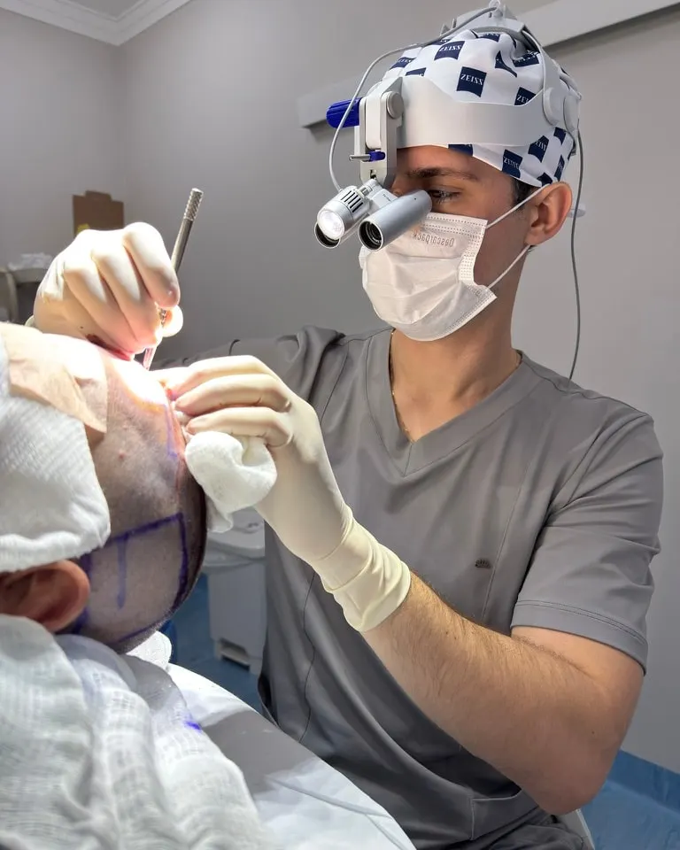
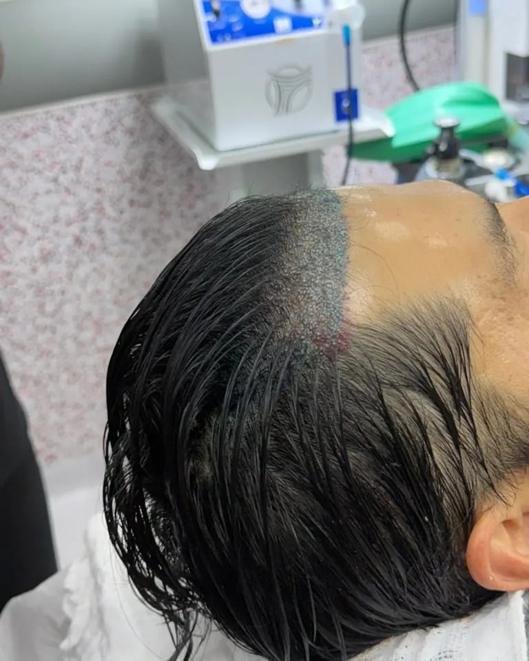
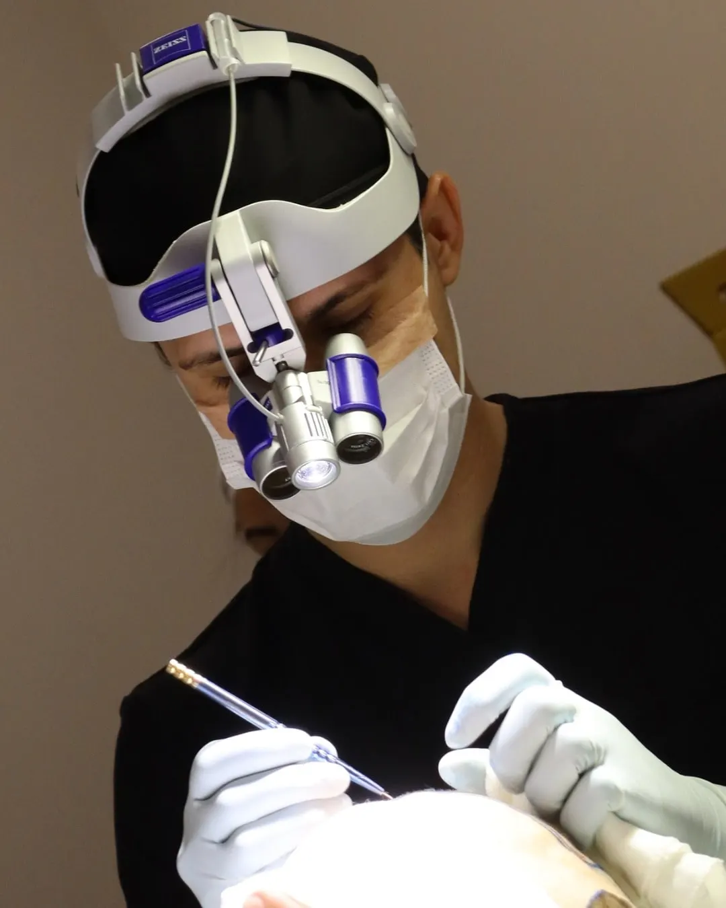

Consultório, São José do Rio Preto/SP
Iguatemi Business
Av. Pres. Juscelino K. de Oliveira, 5000sala 1010, 10º andar, Iguatemi
São José do Rio Preto/SP, CEP 15093-540
Consultas de avaliação e retornos.
Abrir no Google MapsTransplante Capilar e Tricologia, com a técnica sem raspagem como rotina. O mesmo médico do primeiro traço ao último enxerto, o dia inteiro dedicado a você.
5,0 no Google, 79 avaliações Dr. Ícaro Queiroz, CRM-SP 240.006
É mover os seus próprios folículos, um a um, da nuca e das laterais para as áreas onde o cabelo rareou. Os fios da região doadora são geneticamente resistentes à queda. Quando mudam de lugar, levam essa resistência junto.
Não é implante de fio artificial. Não é prótese. É o seu cabelo, redistribuído.

Cada folículo é retirado individualmente, com um extrator de ponta micrométrica, sem corte cirúrgico e sem pontos na área doadora. A diferença entre um FUE bem feito e um FUE qualquer está em três coisas.
Em casos avançados, com área doadora do couro cabeludo limitada, existe o BHT: usar áreas doadoras adicionais, como barba, tórax ou costas. É uma decisão técnica, tomada caso a caso.

Você entra com o seu cabelo. Sai com o seu cabelo.
Muita gente adia o transplante por um motivo que não tem nada a ver com medo de cirurgia: a cabeça raspada. É um mês explicando no trabalho, na família, na foto do casamento. Para quem decidiu resolver o cabelo justamente para não chamar atenção, começar chamando atenção é o oposto do que se quer.
Nada raspado. Nem a área doadora, na nuca e nas laterais, nem a área receptora. Existe lugar que chama de "sem raspar" quando raspa só uma faixa escondida na nuca. Não é o que se faz aqui. Aqui, a técnica sem raspagem é rotina, não exceção.
Extrair folículo com o fio comprido atrapalha a visão do ângulo de saída, e cada unidade precisa de mais cuidado e mais tempo. Isso exige equipamento com modo para cabelo longo, boa magnificação e um dia inteiro dedicado a um único paciente.
Você lava o cabelo com a técnica ensinada na alta, penteia e vai trabalhar. Nas primeiras semanas existem crostinhas pequenas na área receptora, que saem com as lavagens, e o cabelo em volta as disfarça.
Não. E quem disser que serve está vendendo, não avaliando.
Costuma funcionar bem quando
Pode não ser a melhor escolha quando
| Critério | Sem raspar | Com raspagem |
|---|---|---|
| Cabelo raspado | Nada | Área doadora e receptora aparadas |
| Volta à rotina | No dia seguinte, sem explicar nada | No dia seguinte, mas o cabelo curto aparece |
| Área que dá para tratar | Pequena e média | Pequena, média e extensa |
| Duração da cirurgia | Mais longa | Mais curta |
| Naturalidade do resultado | A mesma | A mesma |
Como é o dia da cirurgia, em cinco etapas.
Antes de qualquer anestesia, a linha frontal é desenhada à mão, no seu rosto, respeitando o formato da testa, a posição dos músculos e a sua idade. Você acompanha no espelho e só seguimos quando você concorda. É ela que define se o resultado vai parecer natural daqui a dez anos, não só daqui a um.
Anestesia local e sedação, para atravessar o procedimento com o máximo de conforto. A sedação pode ser por via oral ou venosa, com anestesista. A escolha é conversada antes, na avaliação.
Com o extrator Mamba e a lupa ZEISS, cada unidade folicular é retirada da área doadora e separada por número de fios. Sem corte, sem pontos, sem cicatriz linear.
Os folículos são colocados um a um, com controle de profundidade, ângulo e direção de cada fio. É o que faz o cabelo nascer na direção certa, e não em pé.
Você vai para casa no mesmo dia, com orientação por escrito, produtos e canal direto no WhatsApp. Retornos em 30 dias, 6 meses e 12 meses, com mesoterapia mensal no primeiro ano.
O Dr. Ícaro gravou uma cirurgia completa e explicou cada etapa. Se você quer saber exatamente o que vai acontecer no seu dia, assista.

Não existe uma segunda cirurgia marcada no mesmo dia, nem um paciente esperando na sala ao lado. O médico que desenha a sua linha frontal às sete da manhã é o mesmo que implanta o último folículo à tarde.
As cirurgias acontecem na Vitta Dermatologia, centro cirúrgico completo em São José do Rio Preto.
O que entrega um transplante malfeito quase nunca é a quantidade de fios. É a linha frontal reta demais, o fio nascendo no ângulo errado, a densidade que não conversa com o formato do rosto.
Por isso a linha é desenhada à mão, no seu rosto, com você olhando no espelho, antes de qualquer coisa começar. E cada folículo é implantado com implanter, o instrumento que permite controlar profundidade, ângulo e direção fio a fio.
O objetivo não é você ter cabelo. É ninguém conseguir dizer quando você fez.
É irregular, como uma linha natural, ou reta como se tivesse sido desenhada com régua?
Eles saem deitados, acompanhando o couro cabeludo, ou saem em pé?
A densidade cresce aos poucos da linha para trás, ou existe um degrau visível onde o transplante começa?
Casos reais, de pacientes do Dr. Ícaro, sem retoque. Arraste a linha para comparar antes e depois. Nenhum resultado aqui é promessa: cabelo é individual e depende da área doadora, do tipo de fio, da idade e da evolução da queda de cada pessoa.


Resultados individuais, que variam de pessoa para pessoa. Só a avaliação, olhando a sua área doadora, diz o que é possível no seu caso.
Ver os 24 casosAntes de tratar, diagnosticar. Por isso a avaliação começa pela Tricologia.
Calvície de padrão masculino e feminino é a causa mais comum de queda, mas não é a única. Existe queda por deficiência de ferro, alteração de tireoide, doença do couro cabeludo, medicação, estresse agudo, dieta, inflamação crônica na raiz. Operar quem tem uma queda ativa não tratada é colocar fios novos em um terreno que continua perdendo os antigos.
Se o seu caso for clínico, você vai ouvir isso com todas as letras.
Quem faz transplante e não trata a queda que continua tem um bom resultado no primeiro ano e uma frustração no terceiro. Aqui, o tratamento clínico faz parte do plano, antes e depois da cirurgia.
Agendar consulta de TricologiaCada pessoa tem um ritmo. Este calendário é a média, não uma promessa.
Inchaço leve no rosto é comum e passa. Dormir com a cabeça elevada ajuda. Lavagem com técnica própria, ensinada no dia da alta.
Os fios transplantados caem. Isso assusta quem não foi avisado: é esperado, o folículo ficou. Retorno em 30 dias.
O cabelo começa a nascer, fino e desigual no começo.
O fio engrossa e a densidade aparece.
Resultado consolidado.
Médico, com atuação dedicada ao Transplante Capilar e à Tricologia
Cresci em Iturama, no interior de Minas, vendo meu pai trabalhar. Com ele aprendi cedo que existe quem entrega o que combinou e quem entrega o que deu para fazer. Levei essa lição para a medicina. É por isso que opero um único paciente por dia.
Fazer duas ou três cirurgias no mesmo dia significa dividir atenção, apressar etapa e delegar o que não deveria ser delegado. É a decisão mais cara que ele toma, e a que mais muda o resultado.
Pós-graduação não caracteriza título de especialista, conforme a Resolução CFM nº 2.336/2023. CRM-SP 240.006 · CRM-MG 105.085.
O primeiro passo é uma conversa, sem compromisso. Você sai sabendo se é candidato, qual técnica faz sentido e o que esperar.
Agendar avaliaçãoConsultório, São José do Rio Preto/SP
Consultas de avaliação e retornos.
Abrir no Google MapsCentro cirúrgico, São José do Rio Preto/SP
Todas as cirurgias acontecem aqui.
Abrir no Google MapsAtendimento em Iturama/MG
Datas pontuais. A Nara informa as próximas pelo WhatsApp.
Ver datas em IturamaPacientes de Rio Preto e região, e do Triângulo Mineiro: Catanduva, Mirassol, Votuporanga, Araçatuba, Barretos, Frutal, Uberaba, Jales, Ribeirão Preto, Olímpia e outras cidades. Para quem mora fora, o caminho costuma ser: pré-avaliação por fotos no WhatsApp, depois consulta e cirurgia agendadas com folga para a viagem.
Atendimento de segunda a sexta, das 8h às 18h, pelo WhatsApp 17 99612-1807, com a Nara.
Não necessariamente. A técnica sem raspagem mantém o comprimento dos fios na área doadora e na receptora. Se ela serve para o seu caso, quem diz é a avaliação.
A anestesia é local, com sedação. O desconforto maior costuma ser a picada da anestesia, no começo. Depois disso, a maior parte dos pacientes conversa, assiste a série ou cochila durante a cirurgia.
É um dia inteiro, de manhã ao fim da tarde, com pausas para comer, ir ao banheiro e descansar. Você vai para casa no mesmo dia, com acompanhante: por causa da sedação, não pode dirigir.
Quem faz sem raspagem geralmente retoma a rotina no dia seguinte. Quem faz com raspagem também, mas aí o cabelo curto denuncia. Esforço físico e academia têm prazo próprio, combinado no pós-operatório.
Faz. Barba, sobrancelha e couro cabeludo, em homens e mulheres.
O valor depende do número de enxertos, da técnica e do tipo de sedação, e por isso só é fechado depois da avaliação. A Nara explica as condições pelo WhatsApp.
Na avaliação, o Dr. Ícaro olha seu couro cabeludo na tricoscopia, entende sua história, fotografa e desenha a linha. Só depois disso se fala em cirurgia.